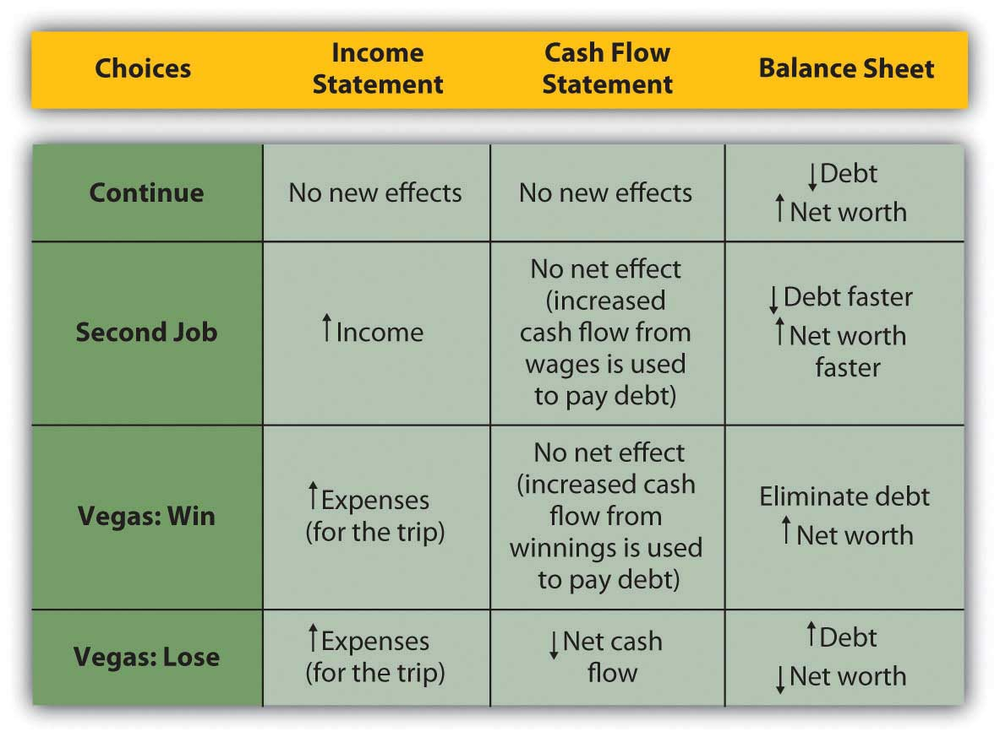
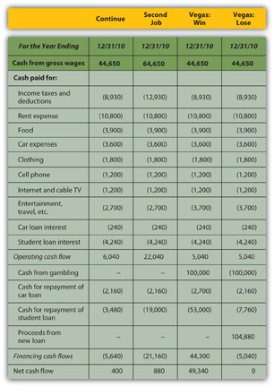
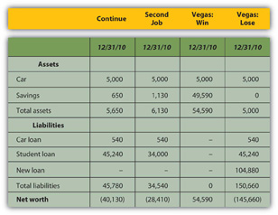

Now that you understand the relationship of time and value, especially looking forward, you can begin to think about how your ideas and plans will look as they happen. More specifically, you can begin to see how your future will look in the mirror of your financial statements. Projected or pro forma financial statementsProjected results for financial statements in the future, given assumptions about what will happen in the meantime. can show the consequences of choices. To project future financial statements, you need to be able to envision the expected results of all the items on them. This can be difficult, for there can be many variables that may affect your income and expenses or cash flows (CF), and some of them may be unpredictable. Predictions always contain uncertainty, so projections are always, at best, educated guesses. Still, they can be useful in helping you to see how the future may look.
We can glimpse Alice’s projected cash flow statements and balance sheets for each of her choices, for example, and their possible outcomes. Alice can actually project how her financial statements will look after each choice is followed.
When making financial decisions, it is helpful to be able to think in terms of their consequences on the financial statements, which provide an order to our summary of financial results. For example, in previous chapters, Alice was deciding how to decrease her debt. Her choices were to continue to pay it down gradually as she does now; to get a second job to pay it off faster; or to go to Vegas, hit it big (or lose big), and eliminate her debt altogether (or wind up with even more). Alice can look at the effects of each choice on her financial statements (Figure 4.14 "Potential Effects on Alice’s Financial Statements")
Figure 4.14 Potential Effects on Alice’s Financial Statements
Looking more closely at the actual numbers on each statement gives a much clearer look at Alice’s situation. Beginning with the income statement, income will increase if she works a second job or goes to Vegas and wins, while expenses will increase (travel expense) if she goes to Vegas at all. Assume that her second job would bring in an extra $20,000 income and that she could win or lose $100,000 in Vegas. Any change in gross wages or winnings (losses) would have a tax consequence; if she loses in Vegas, she will still have income taxes on her salary. Figure 4.15 "Alice’s Pro Forma Income Statements" begins with Alice’s pro forma income statements.
Figure 4.15 Alice’s Pro Forma Income Statements

While Vegas yields the largest increase in net income or personal profit if she wins, it creates the largest decrease if she loses; it is clearly the riskiest option. The pro forma cash flow statements (Figure 4.16 "Alice’s Pro Forma Cash Flow Statements") reinforce this observation.
Figure 4.16 Alice’s Pro Forma Cash Flow Statements
If Alice has a second job, she will use the extra cash flow, after taxes, to pay down her student loan, leaving her with a bit more free cash flow than she would have had without the second job. If she wins in Vegas, she can pay off both her car loan and her student loan and still have an increased free cash flow. However, if she loses in Vegas, she will have to secure more debt to cover her losses. Assuming she borrows as much as she loses, she will have a small negative net cash flow and no free cash flow, and her other assets will have to make up for this loss of cash value.
So, how will Alice’s financial condition look in one year? That depends on how she proceeds, but the pro forma balance sheets (Figure 4.17 "Alice’s Pro Forma Balance Sheets") can give a glimpse.
Figure 4.17 Alice’s Pro Forma Balance Sheets
If Alice has a second job, her net worth increases but is still negative, as she has paid down more of her student loan than she otherwise would have, but it is still larger than her asset value. If she wins in Vegas, her net worth can be positive; with her loan paid off entirely, her asset value will equal her net worth. However, if she loses in Vegas, she will have to borrow more, her new debt quadrupling her liabilities and decreasing her net worth by that much more.
A summary of the critical “bottom lines” from each pro forma statement (Figure 4.18 "Alice’s Pro Forma Bottom Lines") most clearly shows Alice’s complete picture for each alternative.
Figure 4.18 Alice’s Pro Forma Bottom Lines

Going to Vegas creates the best and the worst scenarios for Alice, depending on whether she wins or loses. While the outcomes for continuing or getting a second job are fairly certain, the outcome in Vegas is not; there are two possible outcomes in Vegas. The Vegas choice has the most risk or the least certainty.
The Vegas alternative also has strategic costs: if she loses, her increased debt and its obligations—more interest and principal payments on more debt—will further delay her goal of building an asset base from which to generate new sources of income. In the near future, or until her new debt is repaid, she will have even fewer financial choices.
The strategic benefit of the Vegas alternative is that if she wins, she can eliminate debt, begin to build her asset base, and have even more choices (by eliminating debt and freeing cash flow).
The next step for Alice would be to try to assess the probabilities of winning or of losing in Vegas. Once she has determined the risk involved—given the consequences now illuminated on the pro forma financial statements—she would have to decide if she can tolerate that risk, or if she should reject that alternative because of its risk.
Pro forma financial statements show the consequences of financial choices in the context of the financial statements.